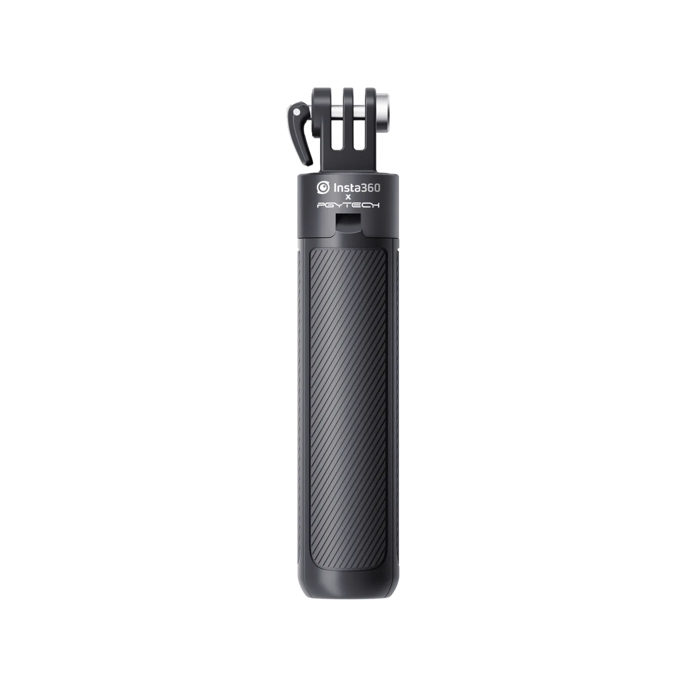
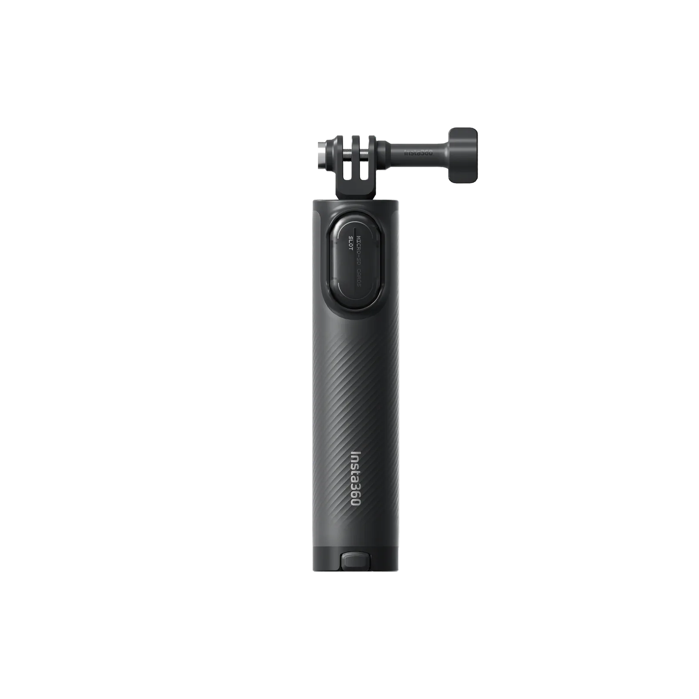
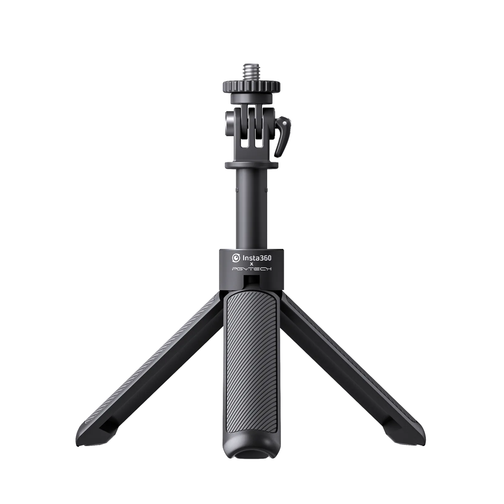
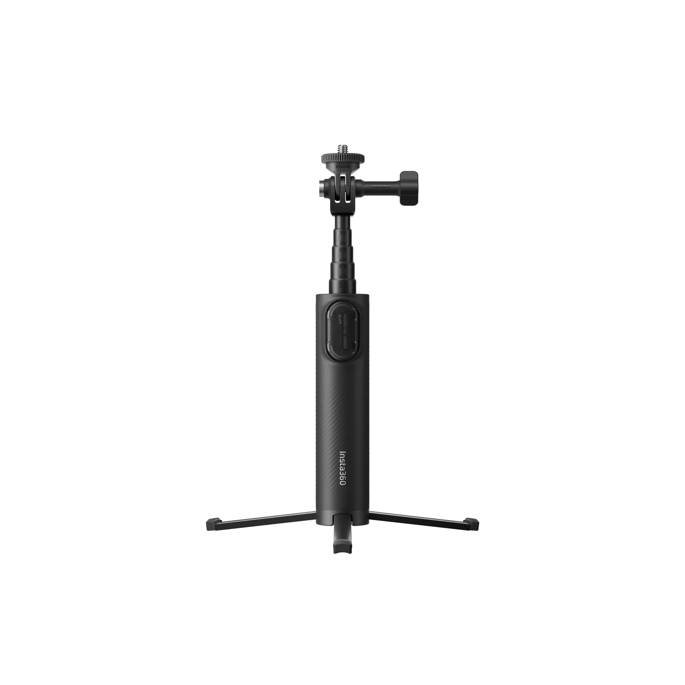
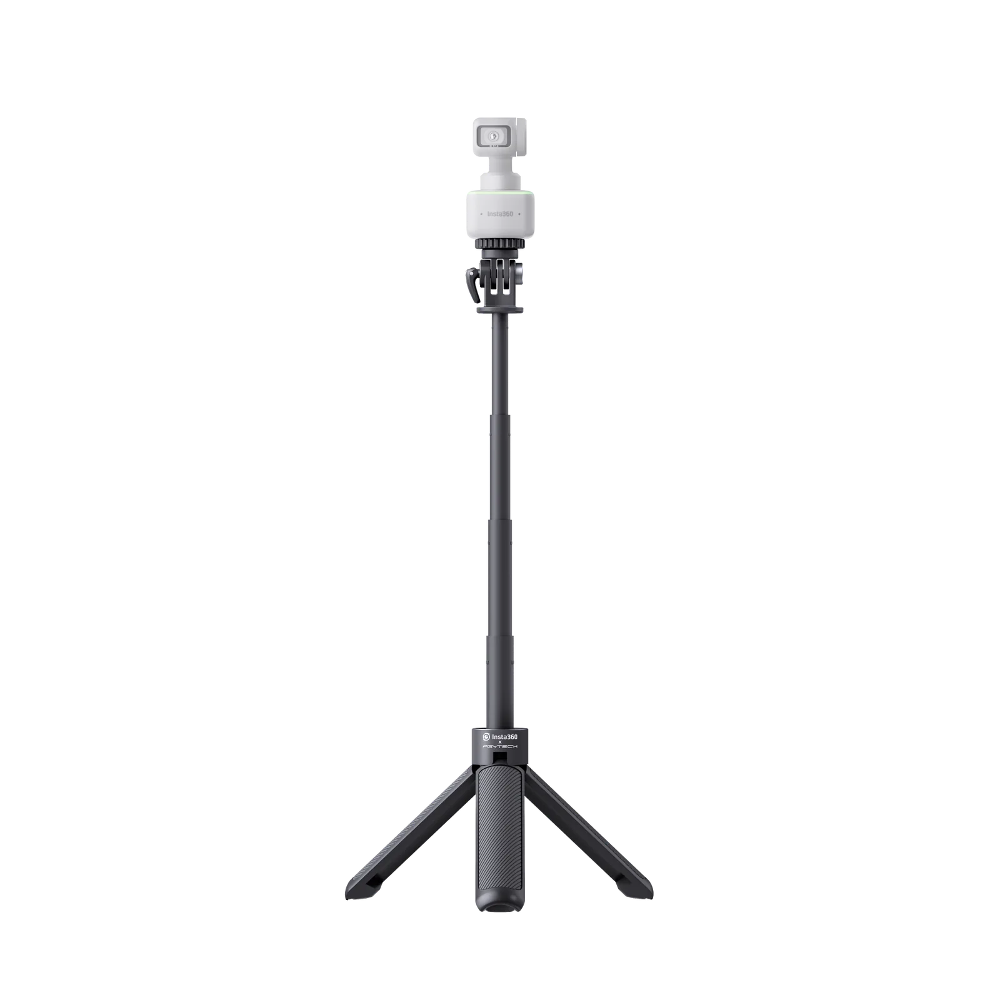
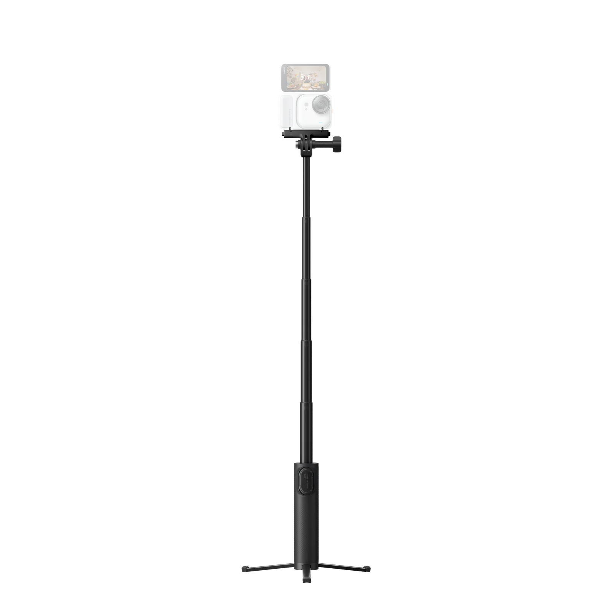
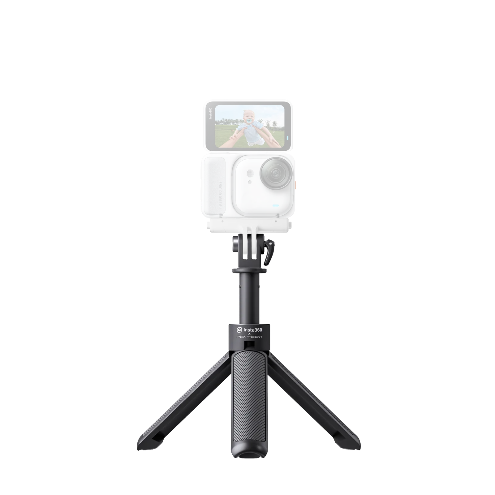
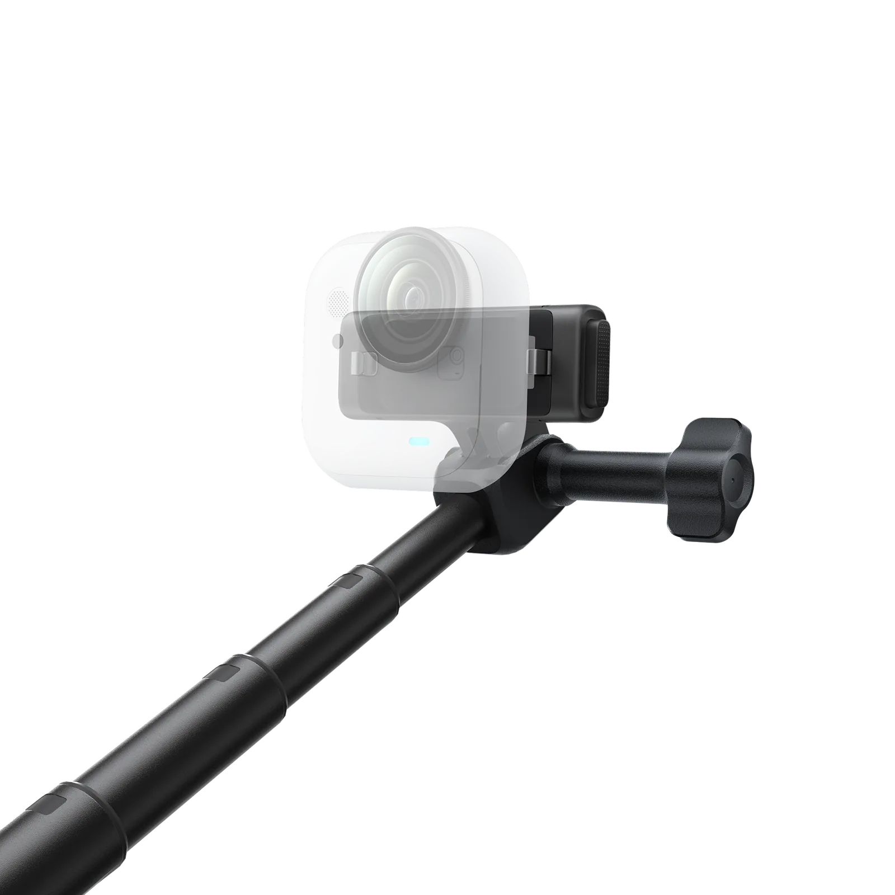
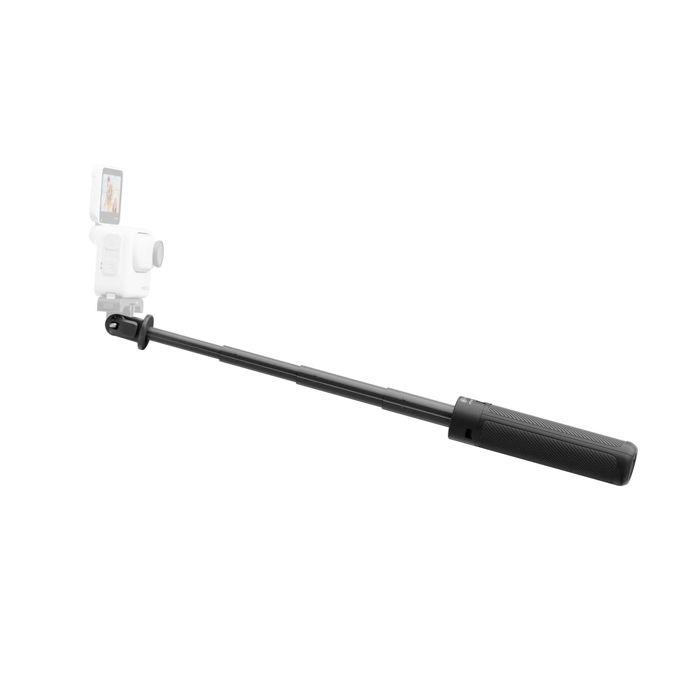
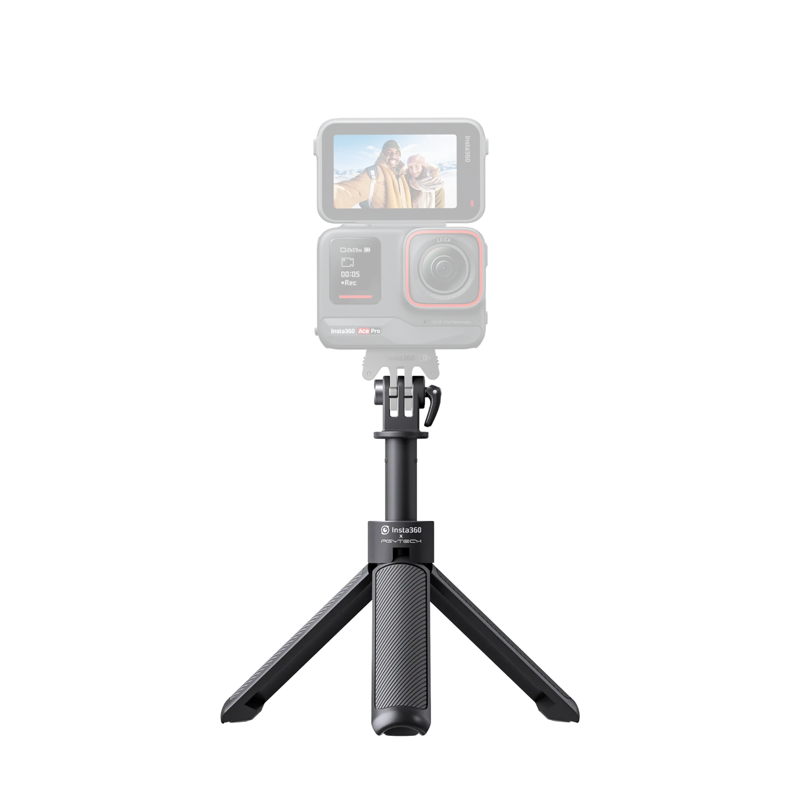

参数规格 · 适配机型 · 详细使用教程 · 官方图文指南
影石 Insta360 目前推出了两代迷你脚架自拍杆，二者均为「自拍杆 + 三脚架」一体化设计，但在伸缩长度、重量、遥控功能等方面有所区别。以下为主要差异概览：
| 对比项 | 迷你脚架自拍杆 1.0 | 迷你脚架自拍杆 2.0 2.0 |
|---|---|---|
| 官方售价 | ¥149 | ¥199（标准版）/ ¥349（遥控套装） |
| 收纳尺寸 | 162 mm × 29 mm × 29 mm | 约 18 cm（收纳长度） |
| 自拍杆展开长度 | 一体式紧凑手持长度 | 58.5 cm |
| 重量 | 92 g | 约 172 g |
| 材质 | PC、ABS、TPU 和铝 | 铝合金、塑胶、TPE |
| 最大承重 | 250 g | 300 g |
| 蓝牙遥控 | 不支持 | 支持（可选遥控套装/单独购买遥控器） |
| 存储卡收纳 | 无 | 标配 microSD 收纳盖（可放 2 张） |
| 1/4" 转接件 | 附赠 | 附赠 |
| 水下使用 | 支持（淡水/海水，使用后需清水冲洗晾干） | 支持（淡水/海水，使用后需清水冲洗晾干） |
| 全景隐形效果 | 相机与自拍杆平行安装时支持隐形 | 旋紧锁紧旋钮使螺杆与相机底部平行、相机与自拍杆平行，可实现隐形 |
| 颜色 | 黑色 | 黑色 / 白色 |




| 参数项 | 详细内容 |
|---|---|
| 产品名称 | 迷你脚架自拍杆（Mini 2-in-1 Tripod） |
| 官方售价 | ¥149 |
| 材质 | PC、ABS、TPU 和铝 |
| 重量 | 92 g |
| 产品尺寸（收纳） | 162 mm × 29 mm × 29 mm |
| 自拍杆长度 | 一体式紧凑手持长度（无需额外拉伸） |
| 最大承重 | 250 g |
| 顶部接口 | 运动相机通用接口（两爪接口） |
| 附赠配件 | 1/4" 接口转接螺丝 |
| 脚架展开方式 | 底部磁吸设计，收展快速便捷 |
| 序列号位置 | 无独立序列号 |
| 水下使用 | 支持淡水/海水，使用后需清水冲洗并完全晾干 |
| 参数项 | 详细内容 |
|---|---|
| 产品名称 | 迷你脚架自拍杆 2.0（Mini 2-in-1 Tripod 2.0） |
| 官方售价 | 标准版 ¥199 / 遥控套装 ¥349 / 白色版 ¥229 / 白色遥控套装 ¥379 |
| 材质 | 铝合金、塑胶、TPE |
| 重量 | 约 172 g |
| 收纳长度 | 约 18 cm |
| 自拍杆展开长度 | 58.5 cm |
| 最大承重 | 300 g |
| 顶部接口 | 运动相机通用接口（两爪接口） |
| 附赠配件 | 1/4" 接口转接件、锁紧螺杆、两爪转 1/4" 接头、存储卡收纳盖、防松垫片 ×4 |
| 存储卡收纳 | 标配收纳盖，可收纳 2 张 microSD 储存卡 |
| 蓝牙遥控 | 可选配迷你蓝牙遥控器（遥控套装含遥控器） |
| 脚架展开方式 | 底部旋钮 + 伸缩结构，两种模式自由切换 |
| 序列号位置 | 叶脚内侧 |
| 水下使用 | 支持淡水/海水，使用后需清水冲洗并完全晾干（接触海水需立即用淡水冲洗） |
| 参数项 | 详细内容 |
|---|---|
| 重量 | 约 6.4 g |
| 材质 | 塑胶 |
| 产品尺寸 | 19 mm × 36 mm × 9.5 mm |
| 电池容量 | 60 mAh |
| 电池类型 | 锂离子电池 |
| 有效距离 | 约 10 米 |
| 适用机型 | Ace / Ace Pro / Ace Pro 2 / X3 / X4 / X4 Air / X5 / GO 3S / GO Ultra / Link 系列等 |
以下机型可直接使用迷你脚架自拍杆的通用接口安装。部分机型需要额外转接配件（详见备注）。
顶部为运动相机通用两爪接口，可直接安装影石相机。随包装附赠 1/4" 标准螺丝转接件，可拓展连接其他运动相机、手机夹、补光灯等设备。
一体化设计，可在手持自拍杆和桌面三脚架之间快速切换。无需额外携带三脚架，外出更轻便。


1.0 仅重 92 g，2.0 收纳长度仅约 18 cm，均可轻松放入口袋或相机包侧袋，出行减负。
顶部运动相机通用接口 + 附赠 1/4" 转接件，覆盖影石全系产品及第三方运动相机、手机夹等配件。


2.0 支持选配迷你蓝牙遥控器，远距离（约 10 米）一键触发快门/录制，自拍、团体照、延时摄影更方便。
2.0 手柄处标配 microSD 收纳盖，可收纳 2 张 microSD 储存卡，外出拍摄不怕忘带备用卡。
配合 Insta360 全景相机使用时，只要保持相机与自拍杆平行，即可在拍摄画面中自动消除自拍杆痕迹，拍出仿佛第三人称跟拍的大片效果。
以下教程同时适用于 1.0 和 2.0，部分功能（蓝牙遥控、存储卡收纳）仅限 2.0，文中已标注。
打开包装后，核对清单：自拍杆本体、锁紧螺杆/快拆扳手、1/4" 转接件、说明书。2.0 版本额外检查存储卡收纳盖与防松垫片是否齐全。
直接安装（通用两爪接口）：
将相机底部的两爪底座对准自拍杆顶部的接口，插入锁紧螺杆并用手拧紧即可。如需更稳固，可使用包装内的扳手辅助加固。
转接 1/4" 接口：
若需连接手机夹、补光灯或其他 1/4" 标准螺口设备，先将附赠的 1/4" 转接件安装到自拍杆顶部，再拧上设备即可。
1.0 操作：将底部三脚架支脚收拢并磁吸贴合到手柄，此时整体呈棒状，直接手持即可拍摄。
2.0 操作：先收拢三脚架支脚，然后握住手柄将伸缩杆向上拉出至所需长度（最长可拉至 58.5 cm），旋紧底部固定环锁定长度。

1.0 操作：握住手柄，将底部三支脚架向外掰开，磁吸结构释放后脚架会自动展开到位，放置于平稳桌面或地面。
2.0 操作：拧松底部旋钮，将三支脚架向外拉开并展开到位，再旋紧旋钮固定。如需调整高度，可先拉出伸缩杆再展开脚架。

不使用时应将自拍杆缩回最短，三脚架支脚收拢贴合。若曾在水下（淡水或海水）使用，必须展开所有管节和脚架，用清水彻底冲洗并完全晾干后再收纳。
如接触海水，需立即用淡水冲洗，防止金属部件腐蚀生锈。
搭配 Insta360 360° 全景相机时，只要安装正确，自拍杆即可在画面中完全隐形，拍出仿佛“无人机跟拍”的第三人称视角。
本教程适用于：85cm 便携隐形自拍杆、114cm 便携隐形自拍杆、高强度隐形自拍杆、升级版超长自拍杆、迷你脚架自拍杆、迷你脚架自拍杆 2.0 等。
将全景相机安装到自拍杆顶部，旋转锁紧旋钮固定相机。
调整相机角度，使锁紧螺杆与相机底部平行，且相机与自拍杆平行。
确保相机与自拍杆保持在同一直线上，拍摄过程中尽量保持自拍杆稳定，避免细微晃动影响拼接算法。
打开相机预览画面，查看实时拼接效果，确认自拍杆已隐形。
Ace / Ace Pro / Ace Pro 2 为平面运动相机，自拍杆无法在拍摄时实时隐形，但可通过 Insta360 App 后期去除：
将遥控器靠近相机，按下配对键。部分机型需进入相机设置 > 蓝牙配件 > 搜索并连接「Insta360 Mini Remote」。
配对成功后，即可在约 10 米范围内一键触发拍照或开始/停止录像。
不可以直接安装。GO Ultra 需额外购买「GO Ultra 磁吸快拆配件」作为转接，官方也提供了「GO Ultra 专用套装（2.0 + 磁吸快拆配件）」。
可以。收纳盖为可拆卸设计，如需搭配迷你蓝牙遥控器，可将收纳盖替换为遥控器底座。
可以。通过附赠的 1/4" 转接件，搭配第三方手机夹即可固定手机使用。
请检查：① 相机与自拍杆是否保持平行；② 锁紧螺杆是否与相机底部平行；③ 拍摄过程中是否保持稳定无晃动。若使用 2.0 且已伸长并装有蓝牙遥控器/收纳盖，该部分可能无法完全隐形。
如果追求极致轻便、预算有限，1.0（¥149）已能满足日常手持和三脚架需求。如果需要更长的自拍杆（58.5cm）、蓝牙遥控、存储卡收纳，建议选 2.0（¥199）或遥控套装（¥349）。
仅颜色区别，参数与功能完全相同。白色版售价 ¥229，黑色标准版 ¥199。